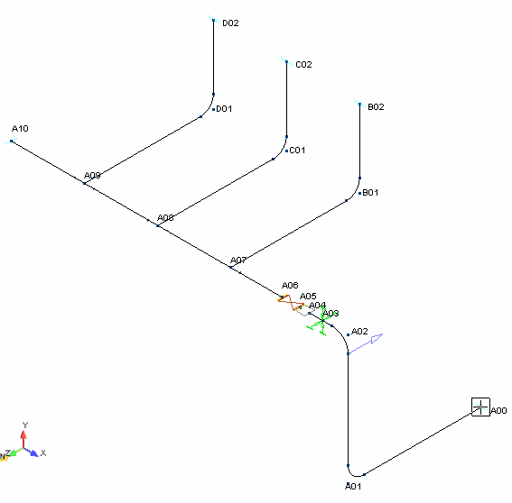

Interactive Review
Now that we have a number of user-defined loads in the model, we can view the results for varying code combinations. As already demonstrated, AutoPIPE allows you to view information about any point in the drawing. This ability also applies to viewing displacement, forces & moments, and other types of results.
- A Single Line view of the model is ideal for viewing point related information. Select View > Mode > Single Line View. The model appears as shown below.
